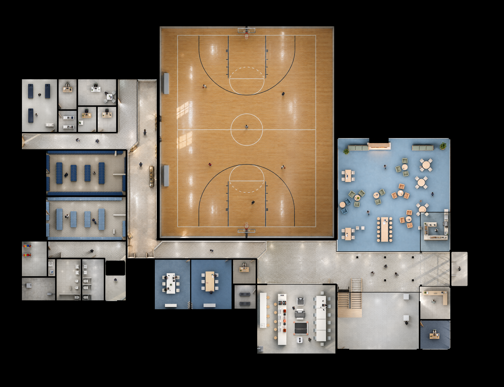
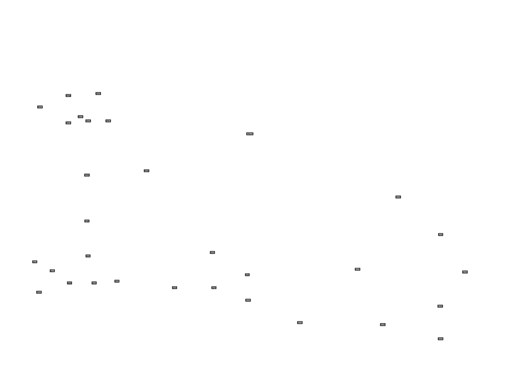

ImageGenBlender comparisonRoom labelsZoom
Positions and masks use the original Blender room coordinates. Generated details can still vary; compare people across rooms here. Start and end maps are identical because all endpoints match.

